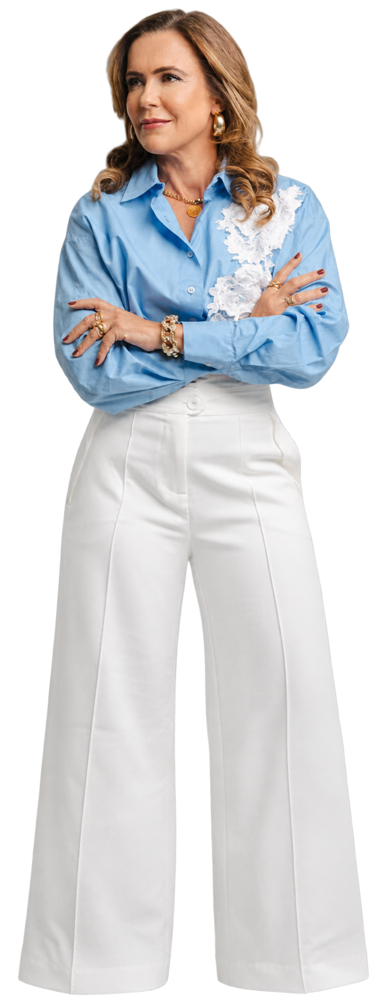

Harmonização facial
Converse sobre seus objetivos para o rosto e conheça as possibilidades de harmonização facial disponíveis na clínica.
Quero saber mais ↗Um novo olhar para o cuidado estético. Conheça o trabalho da Dra. Danielle Machado e descubra as possibilidades para valorizar a sua beleza.
Vamos conversar sobre você ↗DRA. DANIELLE MACHADO · CRBio 125808/05-D

Cada pessoa tem sua história, seus traços e suas expectativas. O primeiro passo para conhecer as possibilidades de cuidado estético é conversar sobre o que você procura.
Na clínica, você pode buscar informações sobre harmonização facial e corporal e agendar uma avaliação com a equipe.
Conheça as áreas de atuação ↓Conheça as frentes de trabalho apresentadas pela Dra. Danielle Machado.
Converse sobre seus objetivos para o rosto e conheça as possibilidades de harmonização facial disponíveis na clínica.
Quero saber mais ↗Saiba mais sobre o trabalho com estética corporal. A avaliação é o momento de esclarecer dúvidas e entender as indicações para o seu caso.
Conversar com a equipe ↗A atuação da Dra. Danielle Machado reúne o atendimento em harmonização facial e corporal, em João Pessoa, e a educação profissional.
Fundadora e mentora do Instituto Machado Vieira, ela também apresenta mentorias e especializações para quem deseja conhecer suas iniciativas de formação.
Em seu perfil profissional, destaca a naturalidade como direção do seu trabalho e informa sua participação na Comissão de Saúde Estética do CRBio-05.
Além do atendimento clínico, Danielle atua como fundadora e mentora. Conheça as mentorias e especializações e consulte a equipe sobre programas, requisitos e próximas turmas.
Conhecer mentorias e especializações ↗Use o botão de agendamento para abrir o WhatsApp oficial indicado no Linktree da Dra. Danielle. A equipe informa a disponibilidade e orienta os próximos passos.
O atendimento fica em João Pessoa, na Paraíba. Consulte a localização oficial no mapa e confirme os detalhes com a equipe antes da visita. Abrir localização ↗
A indicação depende da avaliação individual. Converse com a profissional sobre seus objetivos, histórico, benefícios, limitações e cuidados envolvidos.
O contato de mentorias e especializações é separado do agendamento clínico. Use o botão da seção de mentorias para falar com a equipe responsável.
Fale com a equipe e agende sua avaliação em João Pessoa.